1. Intonation语调
注意pitch音调，voice音强，length音长，pace速度
1.1 Stress重音
常常给content word( nouns, verbs, adjectives, adverbs )以重音强调，而function word不作重音强调。
所谓强调，是指主要元音（vowel）延长，并提高音调。
不强调的部分，声音减弱去说出来，软化辅音，减少元音的发音强度，用更少的精力去说出来。
1.2 Melody旋律
content word的发音音调更高，声音更大. when words are stressed, they are louder, and also higher in pitch.
合适的melody不是每个词音调都一样，也不是一个词高一个词低。而是将content words强调出来后，如果后面是function words，开始逐渐降低，直到遇到下一个需要强调的词。
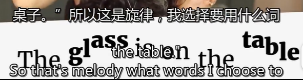
另外强调content words的同时，除了降低function words的音量、音调和音长，也可以将不重要的function words做一下特殊处理。
这种特殊处理是将元音变成一种特殊的低沉的音。发这种低沉的音需要略微下沉下巴，放松舌头和嘴唇，把舌头略微下压，发出类似于“饿”的音。这种特殊的低沉的音实际是把原来功能词中的元音简化了，称作schwa即弱中央元音，音标表现为倒置的e（about的第一个音）。
经过这样的特殊处理后再加上连读，这些function words就成功地被弱化了。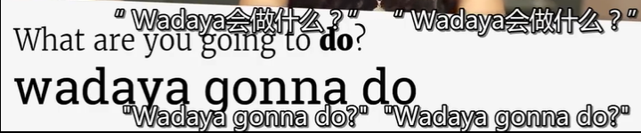
1.3 Rhythm节奏
- content word的发音时间更长，并且速度更慢。
- rhythm is the result of your message. 同上例子，do的音长比前面5个function words的总长都长。
- 当出现多个content words时，强调的程度也会不一样。
- 长句或者两个句子，中间的停顿是节奏的关键部分。
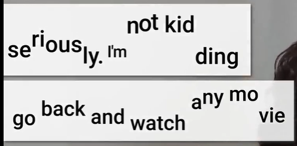
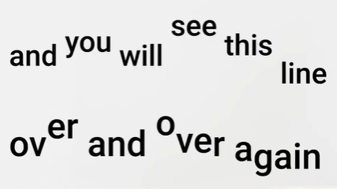
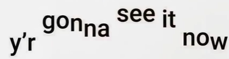
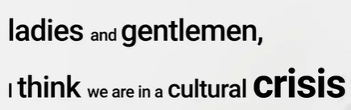
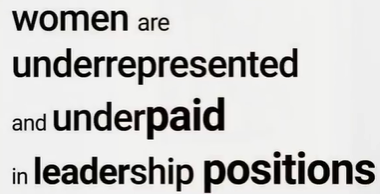
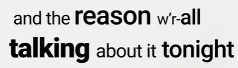
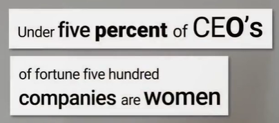
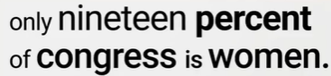
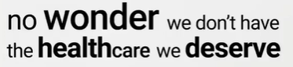
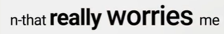
2. Connected speech连读
- 每个句子由单元块组成，每个单元内部都是紧密连接的，听起来像是一个单词；每个单元之间彼此分开。
- 单元内部连续不换气，单元之间有停顿换气。
2.1 Connection between words in the unit
元音（vowel）和辅音（consonant）组合出来，有四种前后单词的连接组合：
2.1.1 vowel+consonant
1play fair读作plei-f2see them
2.1.2 consonant+consonant
前后为同一个辅音时，前一个不发音，后一个发音，听起来像一个（长）辅音。
1cheap prices读作chea-prices2big gate读作bi-gate3gas station读作ga-sstation前后为不同辅音时，前后辅音之间不要换气呼吸，直接连读，听起来像一个单词的两个音节。
1bar crawl读作barkrawl2mixed nuts读作mikstnuts3hash reality读作har-shree-a-ldee4wine glass读作wai-nglass当前一个以t结尾，后一个以y开头，将产生ch的发音。
1can't you读作can-chyl;;l;ou2won't you读作wown-chyou3get your读作ge-chy'r当前一个以d结尾，后一个以y开头，将产生dj的发音。
1did you读作di-djuw2hide your读作hai-dj'r
2.1.3 consonant+vowel *
- 第一个单词的辅音结尾作为下一个单词的开头。
- 如果需要强调第一个单词，那么只强调去掉结尾辅音的部分。
连读最重要的部分。
1work ethics读作wor-kethics2finish it读作fini-shit3what about it读作whuh-duh-baw-d't4one mile away读作one-mai-laway
2.1.4 vowel+vowel
同一个元音，则把他们直接连读成一个（长）元音即可。
1we each读作weeeeech2law office读作lawwwfis当第一个元音结尾是u或o而下一个开头是元音时，会产生w的辅音发音。
1you always读作yuw-(w)aa-ways2who is it读作who-wi-zit3go about读作go-(w)a-bawt当第一个元音结尾是e，会产生y的辅音发音。
1see it读作see-(y)it2she always读作shee-(y)aa-ways3she already读作shee-(y)aa-ready4we are here读作wee-(y)ar-here